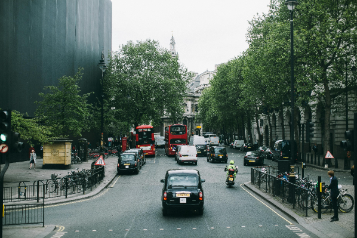

Travel Tips
Currency
Currency: The currency used in london is British pound. It's better to exchange them from bank or registerd currency exhange services.Currency exchange is available in most of the supermarkets.
Cards:Card payment is widely accepted in london including contactless payments.
Cash:Though almost all the businees accepts card payment some still prefers cash. If you need to withdraw cash there are ATM's available throughout the city.
Health
NHS:The London city provides free helath-care services to visiotrs.But it is better get your insurance to cover any unexpected needs.
Pharmacy:Chain pharmacy brand like boots and superdrug is widely available in london city. It is common to get advice and priamary medication from pharmacist.
Emergency Numbers:
For NHS: 111
Main Emergency: 999
Taxis
Black cab:Black cabs are traditional British taxi service. They are available 24/7 in london. There is no need to book them earlier though nowadays it's avialable in online booking servces. They does take both cash and card payments.
Others:All the known online tranportation service including Uber, FreeNow, Bolt etc are available in london.Also in most cases they are cheaper than Black cabs.
Eating out
Restaurants: London has diverce restraunts and diffrent cuisine from all over the world.Some renowned chain restraunts are:
- Nando's
- Papri
- Pepe's
Known food palces: Best areas to explore restraunts are:
- Soho
- Covent Garden
- Mayfair
- Brick-lane
Cafes: There are cafes almost every where in lonond. Some weel known cafes are:
- Costa
- The Tea House
- valencia cafe
Language
The official language in london is English. London has varity of accents as people from diverse background lives here.
As lonond is a diverse muliti-cultural city you will see people communicating in other languages as well.
Thanks,sorry, please, welcome are the words that can go long way in london.